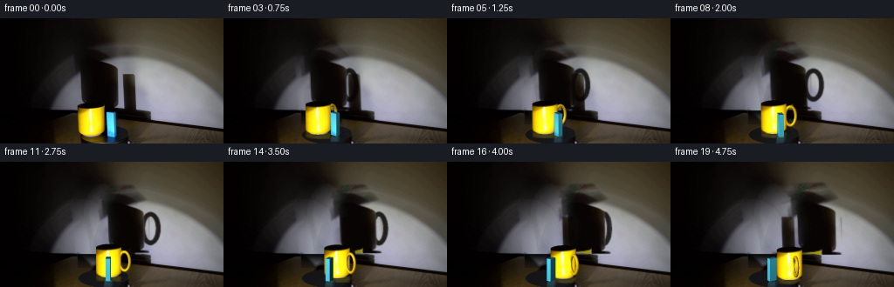
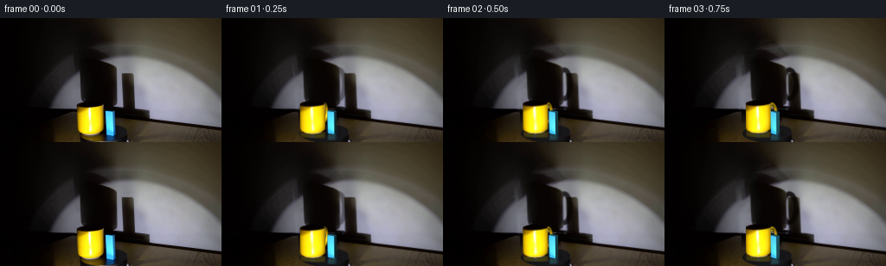

CODING AGENTS AS PIXEL WORLD MODELS
traex/GPT-6.1-Sol · 0081
点击播放 · 原生 RGB 像素
逐轮保存的候选
回放视频、检查图与代码变化。
每份候选均可单独播放。实际图片检查记录在下方工具轨迹中。
候选 01播放与检查图
点击播放 · 原生 RGB 像素


展开代码变化
--- 上一保存版本
+++ 本次保存版本
@@ -0,0 +1,290 @@
+from pathlib import Path
+import numpy as np
+from PIL import Image
+import cv2
+from scipy.interpolate import RBFInterpolator
+from scipy.ndimage import gaussian_filter
+import artifact_io
+
+ROOT=Path(__file__).resolve().parent
+S=3; H=144; W=256
+im=np.array(Image.open(ROOT/'first_frame.png').convert('RGB'))
+Y,X=np.mgrid[:H,:W]
+TILT=.27
+K=np.sqrt(1-TILT*TILT)
+CENTER=np.array([119.,134.])
+M0=np.array([104.,131.1])
+B0=np.array([127.45,133.35])
+
+def polygon(points):
+ m=np.zeros((H,W),np.uint8)
+ cv2.fillPoly(m,[np.round(points).astype(np.int32)],255)
+ return m
+
+# Recover only the wall areas that the two objects initially occlude.
+mm=polygon([(86,25),(121,25),(138,42),(124,48),(140,56),(141,105),(86,105),(83,66),(80,49)])
+bm=polygon([(138,61),(158,61),(161,106),(140,108)])
+excluded=cv2.dilate((mm|bm),np.ones((7,7),np.uint8))>0
+known=(Y<104)&~excluded&(X%4==0)&(Y%4==0)
+rbf=RBFInterpolator(np.stack([X[known]/100,Y[known]/100],axis=1),im[known].astype(float),smoothing=.015,kernel='thin_plate_spline',neighbors=100)
+wall=np.clip(rbf(np.stack([X.ravel()/100,Y.ravel()/100],axis=1)).reshape(H,W,3),0,255)
+# Smooth feathering protects all of the unoccluded original photographic detail.
+wm=gaussian_filter((mm>0).astype(float),1.0)
+wb=gaussian_filter((bm>0).astype(float),.8)
+wm*=np.clip((105.5-Y)/2,0,1);wb*=np.clip((107-Y)/3,0,1)
+base=im.astype(float).copy()
+recover=np.maximum(wall-base,0)
+base+=recover*np.maximum(wm,wb)[...,None]
+ambient=np.array([7.,3.5,2.])
+a=(base-im)/(np.maximum(base-ambient,1))
+a=np.clip(a,0,.996)
+# Split the two photographic shadow layers, including their soft edges.
+left=np.clip((142-X)/3,0,1)
+ma=a*left[...,None]
+ba=a*(1-left[...,None])
+ma[Y>105]=0;ba[Y>107]=0
+
+# Separate the actual ceramic and the prism from their reflected images.
+mugmask=polygon([(89,103),(99,102),(110,102),(117,100),(119,101),(120,121),(119,128),(117,131),(114,133),(111,134),(99,135),(94,134),(91,131),(89,128)])
+blockmask=polygon([(121,107),(126,106),(133,107),(134,128),(134,135),(126,136),(122,132)])
+refmask=polygon([(91,133),(121,133),(128,139),(127,143),(92,143)])|polygon([(121,133),(134,133),(137,143),(120,143)])
+objectmask=cv2.dilate(mugmask|blockmask|refmask,np.ones((3,3),np.uint8))
+clean=cv2.inpaint(np.clip(base,0,255).astype(np.uint8),objectmask,4,cv2.INPAINT_TELEA).astype(float)
+ellipse=((X-119)/29.0)**2+((Y-133.5)/10.0)**2
+plate=(ellipse<1).astype(float)
+# Undisturbed portions of the original plate are retained. Reconstruct the few
+# hidden pixels as a very dark, satin-finished turntable surface.
+platecolor=np.empty((H,W,3),float)
+v=20+4*np.clip((X-100)/42,0,1)+.10*(Y-130)
+platecolor[:,:,0]=v;platecolor[:,:,1]=v-.6;platecolor[:,:,2]=v+1.1
+fill=(objectmask>0)&(ellipse<1.03)&(Y>121)
+clean[fill]=platecolor[fill]
+# In the shadow of the cup, the rear of the plate has virtually no direct light.
+behind=(objectmask>0)&(Y>105)&(Y<122)&(X>88)&(X<136)
+clean[behind]*=np.clip((Y[behind]-106)/18,.12,.78)[:,None]
+
+# The cylinder's original photographic radiance becomes a view-space ceramic
+# texture: rotational symmetry retains the stationary lighting/highlight pattern.
+tex=im.astype(float)
+R=14.55; Z=30.7/K
+cupbase=131.1
+
+def orbit(p,theta):
+ x=p[0]-CENTER[0]; d=(p[1]-CENTER[1])/TILT
+ c=np.cos(theta);s=np.sin(theta)
+ q=np.array([c*x-s*d,s*x+c*d])
+ return q,np.array([CENTER[0]+q[0],CENTER[1]+TILT*q[1]])
+
+
+def bilinear(image,x,y):
+ return cv2.remap(image.astype(np.float32),x.astype(np.float32),y.astype(np.float32),cv2.INTER_LINEAR,borderMode=cv2.BORDER_REPLICATE)
+
+
+def project(v):
+ out=np.stack([CENTER[0]+v[:,0],CENTER[1]+TILT*v[:,1]-K*v[:,2]],axis=-1)
+ return out*S, K*v[:,1]+TILT*v[:,2]
+
+
+def triangle(canvas,zbuf,verts,depth,colors,uv=None,texture=None):
+ lo=np.maximum(np.floor(verts.min(0)).astype(int),[0,0]); hi=np.minimum(np.ceil(verts.max(0)).astype(int),[W*S-1,H*S-1])
+ if np.any(hi<lo):return
+ x0,y0=lo;x1,y1=hi
+ py,px=np.mgrid[y0:y1+1,x0:x1+1];px=px+.5;py=py+.5
+ p0,p1,p2=verts
+ den=(p1[1]-p2[1])*(p0[0]-p2[0])+(p2[0]-p1[0])*(p0[1]-p2[1])
+ if abs(den)<1e-7:return
+ aa=((p1[1]-p2[1])*(px-p2[0])+(p2[0]-p1[0])*(py-p2[1]))/den
+ bb=((p2[1]-p0[1])*(px-p2[0])+(p0[0]-p2[0])*(py-p2[1]))/den
+ cc=1-aa-bb
+ dd=aa*depth[0]+bb*depth[1]+cc*depth[2]
+ zz=zbuf[y0:y1+1,x0:x1+1]
+ good=(aa>=-1e-5)&(bb>=-1e-5)&(cc>=-1e-5)&(dd>zz)
+ if not good.any():return
+ if texture is None:
+ co=aa[...,None]*colors[0]+bb[...,None]*colors[1]+cc[...,None]*colors[2]
+ else:
+ uu=aa*uv[0,0]+bb*uv[1,0]+cc*uv[2,0]
+ vv=aa*uv[0,1]+bb*uv[1,1]+cc*uv[2,1]
+ co=bilinear(texture,uu,vv)
+ co*=aa[...,None]*colors[0]+bb[...,None]*colors[1]+cc[...,None]*colors[2]
+ canvas[y0:y1+1,x0:x1+1][good]=co[good];zz[good]=dd[good]
+
+
+def handle_mesh(q,theta):
+ direction=theta+np.deg2rad(-55)
+ dr=np.array([np.cos(direction),np.sin(direction),0.])
+ perp=np.array([-np.sin(direction),np.cos(direction),0.])
+ n=72;nt=12
+ t=np.arange(n)*2*np.pi/n
+ radial=19.1+6.1*np.cos(t)
+ height=17.+11.1*np.sin(t)
+ centers=radial[:,None]*dr+height[:,None]*np.array([0.,0.,1.])
+ normal=np.cos(t)[:,None]*dr+np.sin(t)[:,None]*np.array([0.,0.,1.])
+ ph=np.arange(nt)*2*np.pi/nt
+ normals=normal[:,None,:]*np.cos(ph)[None,:,None]+perp[None,None,:]*np.sin(ph)[None,:,None]
+ verts=centers[:,None,:]+1.75*normals
+ verts[:,:,0]+=q[0];verts[:,:,1]+=q[1]
+ light=np.array([-.47,.80,.37]);light/=np.linalg.norm(light)
+ lam=np.maximum(normals@light,0)
+ hvec=light+np.array([0,K,TILT]);hvec/=np.linalg.norm(hvec)
+ spec=np.maximum(normals@hvec,0)**34
+ radiance=(.26+.78*lam)[...,None]*np.array([244,195,9.])+spec[...,None]*np.array([95,98,65])
+ # Soft ceramic glazing, not a flat painted outline.
+ return verts.reshape(-1,3),np.clip(radiance.reshape(-1,3),0,255),n,nt
+
+
+def draw_cup(canvas,zbuf,q,screen):
+ # Analytic near-cylinder intersection, with a rounded lower edge.
+ xmin=max(0,int((screen[0]-R-1)*S));xmax=min(W*S,int((screen[0]+R+1)*S)+1)
+ ymin=max(0,int((screen[1]-K*Z-TILT*R-1)*S));ymax=min(H*S,int((screen[1]+TILT*R+1)*S)+1)
+ yy,xx=np.mgrid[ymin:ymax,xmin:xmax]/S
+ xx+=.5/S;yy+=.5/S
+ dx=xx-screen[0]
+ df=np.sqrt(np.maximum(0,R*R-dx*dx))
+ zz=(screen[1]+TILT*df-yy)/K
+ # A small foot radius reduces the silhouette over the lower two millimetres.
+ rlower=R-.95*np.clip((1.9-zz)/1.9,0,1)**2
+ valid=(np.abs(dx)<=rlower)&(zz>=0)&(zz<=Z)
+ depth=K*(q[1]+df)+TILT*zz
+ sy=cupbase+TILT*df-K*zz
+ sx=104+dx
+ color=bilinear(tex,sx,sy)
+ # Subtle inverse-square illumination variation as the rigid platform turns.
+ change=np.clip(1+.0014*(q[0]+15)-.0015*(q[1]+10.74),.92,1.08)
+ color=np.minimum(color*change,255)
+ zarea=zbuf[ymin:ymax,xmin:xmax];ca=canvas[ymin:ymax,xmin:xmax]
+ valid&=depth>zarea
+ ca[valid]=color[valid];zarea[valid]=depth[valid]
+ # The open mouth is a dark ellipse with a narrow yellow ceramic rim.
+ top_y=screen[1]-K*Z
+ dy=(yy-top_y)/TILT
+ dist=(dx/R)**2+(dy/R)**2
+ topgood=(dist<=1.0)&(dy<df+.01)
+ td=K*(q[1]+dy)+TILT*Z
+ topgood&=td>zarea
+ sample=bilinear(tex,104+dx,100.4+TILT*dy)
+ # Use the first-frame dark interior, retaining its rim's asymmetric illumination.
+ ca[topgood]=sample[topgood];zarea[topgood]=td[topgood]
+
+
+def draw_handle(canvas,zbuf,q,theta):
+ verts,colors,n,nt=handle_mesh(q,theta)
+ p,d=project(verts)
+ for i in range(n):
+ for j in range(nt):
+ ids=[i*nt+j,((i+1)%n)*nt+j,((i+1)%n)*nt+(j+1)%nt,i*nt+(j+1)%nt]
+ for ii in [[0,1,2],[0,2,3]]:
+ ix=np.array(ids)[ii]
+ triangle(canvas,zbuf,p[ix],d[ix],colors[ix])
+
+
+def draw_block(canvas,zbuf,q,theta):
+ angle=np.deg2rad(23.5)+theta
+ u=np.array([np.cos(angle),np.sin(angle),0.])*9.27/2
+ v=np.array([np.sin(angle),-np.cos(angle),0.])*5.42/2
+ origin=np.array([q[0],q[1],0.]); h=25.6/K
+ verts=np.array([origin-u-v,origin+u-v,origin+u+v,origin-u+v,
+ origin-u-v+[0,0,h],origin+u-v+[0,0,h],origin+u+v+[0,0,h],origin-u+v+[0,0,h]])
+ p,d=project(verts)
+ faces=[[0,1,5,4],[1,2,6,5],[2,3,7,6],[3,0,4,7],[4,5,6,7]]
+ unit_u=u/np.linalg.norm(u);unit_v=v/np.linalg.norm(v)
+ norms=[-unit_v,unit_u,unit_v,-unit_u,np.array([0,0,1.])]
+ light=np.array([-.47,.85,.23]);light/=np.linalg.norm(light)
+ view=np.array([0,K,TILT])
+ for face,no in zip(faces,norms):
+ if no@view<=0:continue
+ illum=.18+.85*max(0,no@light)
+ # The initially illuminated face retains the original blue surface grain.
+ if face==faces[0]:
+ uv=np.array([[122,132.3],[130,133.8],[130,108.7],[122,107.6]])
+ mul=np.ones((4,3))*illum/1.01
+ for it in [[0,1,2],[0,2,3]]:
+ ix=np.array(face)[it]
+ triangle(canvas,zbuf,p[ix],d[ix],mul[it],uv[it],tex)
+ else:
+ color=np.array([76,218,253.])*illum
+ if face==faces[-1]:color=np.array([87,207,241.])*illum
+ colors=np.tile(color,(4,1))
+ # A modest vertical falloff at the lower edge is present in the source.
+ if face!=faces[-1]:colors[:2]*=.90
+ for it in [[0,1,2],[0,2,3]]:
+ ix=np.array(face)[it]
+ triangle(canvas,zbuf,p[ix],d[ix],colors[it])
+
+
+def warp_shadow(alpha,new,old,m0,q,q0):
+ magn=m0*(160-q0[1])/(160-q[1])
+ scale=magn/m0
+ oldx=88+m0*(old[0]-88)
+ newx=88+magn*(new[0]-88)
+ bottomold=103.0
+ bottomnew=103+(magn-m0)*20
+ mat=np.array([[scale,0,newx-scale*oldx],[0,scale,bottomnew-scale*bottomold]],np.float32)
+ return cv2.warpAffine(alpha.astype(np.float32),mat,(W,H),flags=cv2.INTER_LINEAR,borderMode=cv2.BORDER_CONSTANT),magn
+
+
+def reflection(canvas,q,screen,kind):
+ # Specular reflection in the black surface, short and gently blurred.
+ yy,xx=np.mgrid[:H,:W]
+ dx=xx-screen[0];dy=yy-screen[1]
+ if kind=='cup':
+ df=np.sqrt(np.maximum(0,R*R-dx*dx))
+ sy=cupbase+TILT*df-dy*3.8
+ sx=104+dx
+ w=(np.abs(dx)<R)&(dy>0)&(dy<8.6)&(ellipse<1.02)
+ refl=bilinear(tex,sx,sy)
+ opacity=.30*np.exp(-dy/12)*w
+ else:
+ w=(np.abs(dx)<6)&(dy>0)&(dy<8)&(ellipse<1.02)
+ sy=134-dy*3.4; sx=127.2+dx
+ refl=bilinear(tex,sx,sy)
+ opacity=.31*np.exp(-dy/11)*w
+ opacity=gaussian_filter(opacity,.48)
+ canvas+=(refl-canvas)*opacity[...,None]
+
+
+frames=[im.copy()]
+q0m,_=orbit(M0,0);q0b,_=orbit(B0,0)
+for frame in range(1,20):
+ # Constant angular velocity, clockwise as viewed from above, in real time.
+ theta=np.deg2rad(26.0)*(frame/4)
+ qm,sm=orbit(M0,theta);qb,sb=orbit(B0,theta)
+ picture=clean.copy()
+ am,magm=warp_shadow(ma,sm,M0,1.60,qm,q0m)
+ ab,magb=warp_shadow(ba,sb,B0,1.49,qb,q0b)
+ for layer in [am,ab]:
+ picture=picture*(1-layer)+ambient*layer
+ # The turning handle has a genuine moving, magnified loop shadow.
+ hv,hco,hn,hnt=handle_mesh(qm,theta)
+ alpha=np.zeros((H*S,W*S),np.uint8)
+ hs=np.empty((len(hv),2))
+ hs[:,0]=(88+magm*(CENTER[0]+hv[:,0]-88))*S
+ hs[:,1]=(103+(magm-1.6)*20-magm*K*hv[:,2])*S
+ for i in range(hn):
+ for j in range(hnt):
+ ix=np.array([i*hnt+j,((i+1)%hn)*hnt+j,((i+1)%hn)*hnt+(j+1)%hnt,i*hnt+(j+1)%hnt])
+ cv2.fillConvexPoly(alpha,np.round(hs[ix]).astype(np.int32),255)
+ al=cv2.resize(alpha.astype(np.float32)/255,(W,H),interpolation=cv2.INTER_AREA)
+ al=gaussian_filter(al,.55)*np.clip(theta/.25,0,1)*.85
+ al[Y>105]=0
+ # Avoid strengthening the existing full-umbra part of the photographic shadow.
+ extra=al*(1-am.mean(2))
+ picture=picture*(1-extra[...,None])+ambient*extra[...,None]
+ reflection(picture,qm,sm,'cup');reflection(picture,qb,sb,'block')
+ # Small rigid contact shadows tie both objects to the horizontal plate.
+ contact=np.zeros((H,W),np.float32)
+ cv2.ellipse(contact,(round(sm[0]+2),round(sm[1]+1)),(15,3),0,0,360,.25,-1)
+ cv2.ellipse(contact,(round(sb[0]+2),round(sb[1]+1)),(6,2),0,0,360,.22,-1)
+ contact=gaussian_filter(contact,.7)*plate
+ picture*=1-contact[...,None]
+ canvas=cv2.resize(picture.astype(np.float32),(W*S,H*S),interpolation=cv2.INTER_CUBIC)
+ zbuf=np.full((H*S,W*S),-1e8,np.float32)
+ draw_handle(canvas,zbuf,qm,theta)
+ draw_cup(canvas,zbuf,qm,sm)
+ draw_block(canvas,zbuf,qb,theta)
+ out=cv2.resize(np.clip(canvas,0,255),(W,H),interpolation=cv2.INTER_AREA)
+ frames.append(np.clip(np.round(out),0,255).astype(np.uint8))
+ if frame in [1,5,10,15,19]:
+ Image.fromarray(frames[-1]).save(ROOT/'.tmp'/f'candidate_{frame:02d}.png')
+frames=np.stack(frames)
+artifact_io.save(frames,ROOT)
候选 02播放与检查图
点击播放 · 原生 RGB 像素

展开代码变化
--- 上一保存版本
+++ 本次保存版本
@@ -277,12 +277,16 @@
cv2.ellipse(contact,(round(sb[0]+2),round(sb[1]+1)),(6,2),0,0,360,.22,-1)
contact=gaussian_filter(contact,.7)*plate
picture*=1-contact[...,None]
- canvas=cv2.resize(picture.astype(np.float32),(W*S,H*S),interpolation=cv2.INTER_CUBIC)
+ backgroundhi=cv2.resize(picture.astype(np.float32),(W*S,H*S),interpolation=cv2.INTER_CUBIC)
+ canvas=backgroundhi.copy()
zbuf=np.full((H*S,W*S),-1e8,np.float32)
draw_handle(canvas,zbuf,qm,theta)
draw_cup(canvas,zbuf,qm,sm)
draw_block(canvas,zbuf,qb,theta)
- out=cv2.resize(np.clip(canvas,0,255),(W,H),interpolation=cv2.INTER_AREA)
+ # Downsample only the newly rendered geometry, leaving the locked-off
+ # photographic background exactly stationary at its native pixel grid.
+ delta=cv2.resize(canvas-backgroundhi,(W,H),interpolation=cv2.INTER_AREA)
+ out=picture+delta
frames.append(np.clip(np.round(out),0,255).astype(np.uint8))
if frame in [1,5,10,15,19]:
Image.fromarray(frames[-1]).save(ROOT/'.tmp'/f'candidate_{frame:02d}.png')
候选 03播放与检查图
可观测工具轨迹
实际执行的命令与返回图片。
命令 1exit 0
/bin/bash -lc 'ls -la; cat prompt.txt; cat GENERATION_RULES.md'
命令 2exit 0
/bin/bash -lc "cat artifact_io.py; python - <<'PY'
from PIL import Image
import numpy as np
im=np.array(Image.open('first_frame.png'))
print(im.shape)
for y in range(0,144,3):
s=''
for x in range(0,256,3):
r,g,b=map(int,im[y:y+3,x:x+3].mean((0,1)))
if r>g*1.15 and g>b*1.4 and r>65: c='Y'
elif b>r*1.2 and b>g*1.06 and b>45: c='B'
elif max(r,g,b)<35:c='@'
elif max(r,g,b)<65:c='#'
elif max(r,g,b)<100:c='O'
elif max(r,g,b)<135:c='o'
elif max(r,g,b)<165:c=':'
elif max(r,g,b)<195:c='.'
else:c=' '
s+=c
print(f'{y:03} {s}')
Image.fromarray(im).save('.tmp/original.png')
PY"命令 3exit 0
/bin/bash -lc "python - <<'PY'
from PIL import Image
import numpy as np
from scipy.ndimage import label
im=np.array(Image.open('first_frame.png')); r,g,b=im.astype(float).transpose(2,0,1)
for n,m in [('yellow',(r>g*1.1)&(g>b*1.3)&(r>60)),('blue',(b>r*1.3)&(b>g*1.15)&(b>40)),('light',(r+g+b)>450)]:
l,c=label(m)
print(n)
for i in range(1,c+1):
yy,xx=np.where(l==i)
if len(xx)>10:print(len(xx),(xx.min(),yy.min(),xx.max(),yy.max()),'mean',im[yy,xx].mean(0))
print('Bottom region')
for y in range(94,144):
s=''
for x in range(55,185):
R,G,B=map(int,im[y,x]); v=(R+G+B)/3
if R>G*1.1 and G>B*1.3 and R>60: c='Y'
elif B>R*1.3 and B>G*1.15 and B>40:c='B'
else:c='@#xo:+. '[min(7,int(v)//28)]
s+=c
print(f'{y:03} {s}')
print('pixels grid')
for y in [0,20,40,60,80,95,100,105,110,115,120,125,130,135,140,143]:
print(y, [(x,tuple(im[y,x])) for x in range(0,256,16)])
PY"命令 4exit 0
/bin/bash -lc "python - <<'PY'
import numpy as np
from PIL import Image
im=np.array(Image.open('first_frame.png'))
for y in range(97,144):
print(f'{y:3}',end=' ')
for x in range(83,138):
r,g,b=map(int,im[y,x])
if r>100 and g>80 and b<75:
c='A' if r<180 else ('y' if g<200 else 'Y')
elif b>65 and b>r*1.25: c='b' if g<150 else 'B'
elif r+g+b<85:c='@'
else:c='.'
print(c,end='')
print()
print('mug rows colors')
for y in [101,102,103,104,105,110,120,130,134,135,136,137]:
print(y,[(x,tuple(map(int,im[y,x]))) for x in range(86,123,2)])
PY"命令 5exit 0
/bin/bash -lc "python - <<'PY'
import numpy as np
from PIL import Image
im=np.array(Image.open('first_frame.png')); v=im.mean(2)
for y in range(0,108,2):
print(f'{y:03} '+''.join('0123456789ABCDEF'[min(15,int(v[y:y+2,x:x+2].mean())//13)] for x in range(40,180,2)))
for y in [0,10,20,30,40,45,50,60,70,80,90,100,103]:
print(y,[(x,int(v[y,x])) for x in range(60,167,4)])
PY"命令 6exit 0
/bin/bash -lc "python - <<'PY'
import numpy as np
from PIL import Image
im=np.array(Image.open('first_frame.png'))
for y in range(103,144):
s=''
for x in range(0,256,2):
r,g,b=im[y,x].astype(float)
if r>100 and g>70 and b<60:c='Y'
elif b>50 and b>r*1.3:c='B'
elif r+g+b<35:c='@'
elif r+g+b<75:c='#'
elif b>r:c='c' if b>g*1.04 else 'o'
else:c='t' if r>g*1.05 else 'o'
s+=c
print(f'{y:03} {s}')
PY"命令 7exit 0
/bin/bash -lc "python - <<'PY' import cv2,scipy,numpy print(cv2.__version__,scipy.__version__) PY"
命令 8exit 0
/bin/bash -lc "cat > .tmp/analyze.py <<'PY'
import numpy as np
from PIL import Image
im=np.array(Image.open('first_frame.png'));v=im.mean(2)
# exact transitions and silhouette
for y in range(45,108):
print(y,' '.join(f'{x}:{int(v[y,x])}' for x in [82,86,88,90,92,94,96,100,110,120,128,132,134,136,138,140,142,144,152,154,156,158]))
PY
python .tmp/analyze.py"命令 9exit 0
/bin/bash -lc "python - <<'PY'
from PIL import Image
import numpy as np
im=np.array(Image.open('first_frame.png'))
for y in [116,119,122,125,128,130,132,134,136,138,140,142,143]:
print(y,' '.join(f'{x}={im[y,x].tolist()}' for x in range(132,158,2)))
PY"命令 10exit 0
/bin/bash -lc "cat > .tmp/fit.py <<'PY'
import numpy as np, cv2
from PIL import Image
from scipy.interpolate import RBFInterpolator
im=np.array(Image.open('first_frame.png')).astype(float);Y,X=np.mgrid[:144,:256]
# wall shadow region polygons encompassing all penumbra
m=np.zeros((144,256),np.uint8)
cv2.fillPoly(m,[np.array([(88,26),(120,26),(137,41),(122,47),(140,57),(140,105),(86,105),(83,67),(81,49)])],1)
# includes handle rightward shadows but not left wall spotlight
b=np.zeros_like(m);cv2.fillPoly(b,[np.array([(137,61),(158,62),(160,106),(139,109)])],1)
known=(Y<104)&~(cv2.dilate(m|b,np.ones((7,7),np.uint8)).astype(bool))
known &= ((X%4==0)&(Y%4==0))
pts=np.stack([X[known]/100,Y[known]/100],1)
rbf=RBFInterpolator(pts,im[known], smoothing=.015,kernel='thin_plate_spline',neighbors=100)
clear=rbf(np.stack([X.ravel()/100,Y.ravel()/100],1)).reshape(144,256,3)
clear=np.clip(clear,0,255)
for y in [35,45,50,60,80,100]:print(y,[(x,im[y,x].mean().round(),clear[y,x].mean().round()) for x in [85,90,100,110,120,130,140,150,160]])
Image.fromarray(clear.astype('uint8')).save('.tmp/clear.png')
np.savez('.tmp/fit.npz',clear=clear,m=m,b=b)
PY
python .tmp/fit.py"命令 11exit 0
/bin/bash -lc "cat > generate.py <<'PY'
from pathlib import Path
import numpy as np
from PIL import Image
import cv2
from scipy.interpolate import RBFInterpolator
from scipy.ndimage import gaussian_filter
import artifact_io
ROOT=Path(__file__).resolve().parent
S=3; H=144; W=256
im=np.array(Image.open(ROOT/'first_frame.png').convert('RGB'))
Y,X=np.mgrid[:H,:W]
TILT=.27
K=np.sqrt(1-TILT*TILT)
CENTER=np.array([119.,134.])
M0=np.array([104.,131.1])
B0=np.array([127.45,133.35])
def polygon(points):
m=np.zeros((H,W),np.uint8)
cv2.fillPoly(m,[np.round(points).astype(np.int32)],255)
return m
# Recover only the wall areas that the two objects initially occlude.
mm=polygon([(86,25),(121,25),(138,42),(124,48),(140,56),(141,105),(86,105),(83,66),(80,49)])
bm=polygon([(138,61),(158,61),(161,106),(140,108)])
excluded=cv2.dilate((mm|bm),np.ones((7,7),np.uint8))>0
known=(Y<104)&~excluded&(X%4==0)&(Y%4==0)
rbf=RBFInterpolator(np.stack([X[known]/100,Y[known]/100],axis=1),im[known].astype(float),smoothing=.015,kernel='thin_plate_spline',neighbors=100)
wall=np.clip(rbf(np.stack([X.ravel()/100,Y.ravel()/100],axis=1)).reshape(H,W,3),0,255)
# Smooth feathering protects all of the unoccluded original photographic detail.
wm=gaussian_filter((mm>0).astype(float),1.0)
wb=gaussian_filter((bm>0).astype(float),.8)
wm*=np.clip((105.5-Y)/2,0,1);wb*=np.clip((107-Y)/3,0,1)
base=im.astype(float).copy()
recover=np.maximum(wall-base,0)
base+=recover*np.maximum(wm,wb)[...,None]
ambient=np.array([7.,3.5,2.])
a=(base-im)/(np.maximum(base-ambient,1))
a=np.clip(a,0,.996)
# Split the two photographic shadow layers, including their soft edges.
left=np.clip((142-X)/3,0,1)
ma=a*left[...,None]
ba=a*(1-left[...,None])
ma[Y>105]=0;ba[Y>107]=0
# Separate the actual ceramic and the prism from their reflected images.
mugmask=polygon([(89,103),(99,102),(110,102),(117,100),(119,101),(120,121),(119,128),(117,131),(114,133),(111,134),(99,135),(94,134),(91,131),(89,128)])
blockmask=polygon([(121,107),(126,106),(133,107),(134,128),(134,135),(126,136),(122,132)])
refmask=polygon([(91,133),(121,133),(128,139),(127,143),(92,143)])|polygon([(121,133),(134,133),(137,143),(120,143)])
objectmask=cv2.dilate(mugmask|blockmask|refmask,np.ones((3,3),np.uint8))
clean=cv2.inpaint(np.clip(base,0,255).astype(np.uint8),objectmask,4,cv2.INPAINT_TELEA).astype(float)
ellipse=((X-119)/29.0)**2+((Y-133.5)/10.0)**2
plate=(ellipse<1).astype(float)
# Undisturbed portions of the original plate are retained. Reconstruct the few
# hidden pixels as a very dark, satin-finished turntable surface.
platecolor=np.empty((H,W,3),float)
v=20+4*np.clip((X-100)/42,0,1)+.10*(Y-130)
platecolor[:,:,0]=v;platecolor[:,:,1]=v-.6;platecolor[:,:,2]=v+1.1
fill=(objectmask>0)&(ellipse<1.03)&(Y>121)
clean[fill]=platecolor[fill]
# In the shadow of the cup, the rear of the plate has virtually no direct light.
behind=(objectmask>0)&(Y>105)&(Y<122)&(X>88)&(X<136)
clean[behind]*=np.clip((Y[behind]-106)/18,.12,.78)[:,None]
# The cylinder's original photographic radiance becomes a view-space ceramic
# texture: rotational symmetry retains the stationary lighting/highlight pattern.
tex=im.astype(float)
R=14.55; Z=30.7/K
cupbase=131.1
def orbit(p,theta):
x=p[0]-CENTER[0]; d=(p[1]-CENTER[1])/TILT
c=np.cos(theta);s=np.sin(theta)
q=np.array([c*x-s*d,s*x+c*d])
return q,np.array([CENTER[0]+q[0],CENTER[1]+TILT*q[1]])
def bilinear(image,x,y):
return cv2.remap(image.astype(np.float32),x.astype(np.float32),y.astype(np.float32),cv2.INTER_LINEAR,borderMode=cv2.BORDER_REPLICATE)
def project(v):
out=np.stack([CENTER[0]+v[:,0],CENTER[1]+TILT*v[:,1]-K*v[:,2]],axis=-1)
return out*S, K*v[:,1]+TILT*v[:,2]
def triangle(canvas,zbuf,verts,depth,colors,uv=None,texture=None):
lo=np.maximum(np.floor(verts.min(0)).astype(int),[0,0]); hi=np.minimum(np.ceil(verts.max(0)).astype(int),[W*S-1,H*S-1])
if np.any(hi<lo):return
x0,y0=lo;x1,y1=hi
py,px=np.mgrid[y0:y1+1,x0:x1+1];px=px+.5;py=py+.5
p0,p1,p2=verts
den=(p1[1]-p2[1])*(p0[0]-p2[0])+(p2[0]-p1[0])*(p0[1]-p2[1])
if abs(den)<1e-7:return
aa=((p1[1]-p2[1])*(px-p2[0])+(p2[0]-p1[0])*(py-p2[1]))/den
bb=((p2[1]-p0[1])*(px-p2[0])+(p0[0]-p2[0])*(py-p2[1]))/den
cc=1-aa-bb
dd=aa*depth[0]+bb*depth[1]+cc*depth[2]
zz=zbuf[y0:y1+1,x0:x1+1]
good=(aa>=-1e-5)&(bb>=-1e-5)&(cc>=-1e-5)&(dd>zz)
if not good.any():return
if texture is None:
co=aa[...,None]*colors[0]+bb[...,None]*colors[1]+cc[...,None]*colors[2]
else:
uu=aa*uv[0,0]+bb*uv[1,0]+cc*uv[2,0]
vv=aa*uv[0,1]+bb*uv[1,1]+cc*uv[2,1]
co=bilinear(texture,uu,vv)
co*=aa[...,None]*colors[0]+bb[...,None]*colors[1]+cc[...,None]*colors[2]
canvas[y0:y1+1,x0:x1+1][good]=co[good];zz[good]=dd[good]
def handle_mesh(q,theta):
direction=theta+np.deg2rad(-55)
dr=np.array([np.cos(direction),np.sin(direction),0.])
perp=np.array([-np.sin(direction),np.cos(direction),0.])
n=72;nt=12
t=np.arange(n)*2*np.pi/n
radial=19.1+6.1*np.cos(t)
height=17.+11.1*np.sin(t)
centers=radial[:,None]*dr+height[:,None]*np.array([0.,0.,1.])
normal=np.cos(t)[:,None]*dr+np.sin(t)[:,None]*np.array([0.,0.,1.])
ph=np.arange(nt)*2*np.pi/nt
normals=normal[:,None,:]*np.cos(ph)[None,:,None]+perp[None,None,:]*np.sin(ph)[None,:,None]
verts=centers[:,None,:]+1.75*normals
verts[:,:,0]+=q[0];verts[:,:,1]+=q[1]
light=np.array([-.47,.80,.37]);light/=np.linalg.norm(light)
lam=np.maximum(normals@light,0)
hvec=light+np.array([0,K,TILT]);hvec/=np.linalg.norm(hvec)
spec=np.maximum(normals@hvec,0)**34
radiance=(.26+.78*lam)[...,None]*np.array([244,195,9.])+spec[...,None]*np.array([95,98,65])
# Soft ceramic glazing, not a flat painted outline.
return verts.reshape(-1,3),np.clip(radiance.reshape(-1,3),0,255),n,nt
def draw_cup(canvas,zbuf,q,screen):
# Analytic near-cylinder intersection, with a rounded lower edge.
xmin=max(0,int((screen[0]-R-1)*S));xmax=min(W*S,int((screen[0]+R+1)*S)+1)
ymin=max(0,int((screen[1]-K*Z-TILT*R-1)*S));ymax=min(H*S,int((screen[1]+TILT*R+1)*S)+1)
yy,xx=np.mgrid[ymin:ymax,xmin:xmax]/S
xx+=.5/S;yy+=.5/S
dx=xx-screen[0]
df=np.sqrt(np.maximum(0,R*R-dx*dx))
zz=(screen[1]+TILT*df-yy)/K
# A small foot radius reduces the silhouette over the lower two millimetres.
rlower=R-.95*np.clip((1.9-zz)/1.9,0,1)**2
valid=(np.abs(dx)<=rlower)&(zz>=0)&(zz<=Z)
depth=K*(q[1]+df)+TILT*zz
sy=cupbase+TILT*df-K*zz
sx=104+dx
color=bilinear(tex,sx,sy)
# Subtle inverse-square illumination variation as the rigid platform turns.
change=np.clip(1+.0014*(q[0]+15)-.0015*(q[1]+10.74),.92,1.08)
color=np.minimum(color*change,255)
zarea=zbuf[ymin:ymax,xmin:xmax];ca=canvas[ymin:ymax,xmin:xmax]
valid&=depth>zarea
ca[valid]=color[valid];zarea[valid]=depth[valid]
# The open mouth is a dark ellipse with a narrow yellow ceramic rim.
top_y=screen[1]-K*Z
dy=(yy-top_y)/TILT
dist=(dx/R)**2+(dy/R)**2
topgood=(dist<=1.0)&(dy<df+.01)
td=K*(q[1]+dy)+TILT*Z
topgood&=td>zarea
sample=bilinear(tex,104+dx,100.4+TILT*dy)
# Use the first-frame dark interior, retaining its rim's asymmetric illumination.
ca[topgood]=sample[topgood];zarea[topgood]=td[topgood]
def draw_handle(canvas,zbuf,q,theta):
verts,colors,n,nt=handle_mesh(q,theta)
p,d=project(verts)
for i in range(n):
for j in range(nt):
ids=[i*nt+j,((i+1)%n)*nt+j,((i+1)%n)*nt+(j+1)%nt,i*nt+(j+1)%nt]
for ii in [[0,1,2],[0,2,3]]:
ix=np.array(ids)[ii]
triangle(canvas,zbuf,p[ix],d[ix],colors[ix])
def draw_block(canvas,zbuf,q,theta):
angle=np.deg2rad(23.5)+theta
u=np.array([np.cos(angle),np.sin(angle),0.])*9.27/2
v=np.array([np.sin(angle),-np.cos(angle),0.])*5.42/2
origin=np.array([q[0],q[1],0.]); h=25.6/K
verts=np.array([origin-u-v,origin+u-v,origin+u+v,origin-u+v,
origin-u-v+[0,0,h],origin+u-v+[0,0,h],origin+u+v+[0,0,h],origin-u+v+[0,0,h]])
p,d=project(verts)
faces=[[0,1,5,4],[1,2,6,5],[2,3,7,6],[3,0,4,7],[4,5,6,7]]
unit_u=u/np.linalg.norm(u);unit_v=v/np.linalg.norm(v)
norms=[-unit_v,unit_u,unit_v,-unit_u,np.array([0,0,1.])]
light=np.array([-.47,.85,.23]);light/=np.linalg.norm(light)
view=np.array([0,K,TILT])
for face,no in zip(faces,norms):
if no@view<=0:continue
illum=.18+.85*max(0,no@light)
# The initially illuminated face retains the original blue surface grain.
if face==faces[0]:
uv=np.array([[122,132.3],[130,133.8],[130,108.7],[122,107.6]])
mul=np.ones((4,3))*illum/1.01
for it in [[0,1,2],[0,2,3]]:
ix=np.array(face)[it]
triangle(canvas,zbuf,p[ix],d[ix],mul[it],uv[it],tex)
else:
color=np.array([76,218,253.])*illum
if face==faces[-1]:color=np.array([87,207,241.])*illum
colors=np.tile(color,(4,1))
# A modest vertical falloff at the lower edge is present in the source.
if face"'!=faces[-1]:colors[:2]*=.90
for it in [[0,1,2],[0,2,3]]:
ix=np.array(face)[it]
triangle(canvas,zbuf,p[ix],d[ix],colors[it])
def warp_shadow(alpha,new,old,m0,q,q0):
magn=m0*(160-q0[1])/(160-q[1])
scale=magn/m0
oldx=88+m0*(old[0]-88)
newx=88+magn*(new[0]-88)
bottomold=103.0
bottomnew=103+(magn-m0)*20
mat=np.array([[scale,0,newx-scale*oldx],[0,scale,bottomnew-scale*bottomold]],np.float32)
return cv2.warpAffine(alpha.astype(np.float32),mat,(W,H),flags=cv2.INTER_LINEAR,borderMode=cv2.BORDER_CONSTANT),magn
def reflection(canvas,q,screen,kind):
# Specular reflection in the black surface, short and gently blurred.
yy,xx=np.mgrid[:H,:W]
dx=xx-screen[0];dy=yy-screen[1]
if kind=='"'cup':
df=np.sqrt(np.maximum(0,R*R-dx*dx))
sy=cupbase+TILT*df-dy*3.8
sx=104+dx
w=(np.abs(dx)<R)&(dy>0)&(dy<8.6)&(ellipse<1.02)
refl=bilinear(tex,sx,sy)
opacity=.30*np.exp(-dy/12)*w
else:
w=(np.abs(dx)<6)&(dy>0)&(dy<8)&(ellipse<1.02)
sy=134-dy*3.4; sx=127.2+dx
refl=bilinear(tex,sx,sy)
opacity=.31*np.exp(-dy/11)*w
opacity=gaussian_filter(opacity,.48)
canvas+=(refl-canvas)*opacity[...,None]
frames=[im.copy()]
q0m,_=orbit(M0,0);q0b,_=orbit(B0,0)
for frame in range(1,20):
# Constant angular velocity, clockwise as viewed from above, in real time.
theta=np.deg2rad(26.0)*(frame/4)
qm,sm=orbit(M0,theta);qb,sb=orbit(B0,theta)
picture=clean.copy()
am,magm=warp_shadow(ma,sm,M0,1.60,qm,q0m)
ab,magb=warp_shadow(ba,sb,B0,1.49,qb,q0b)
for layer in [am,ab]:
picture=picture*(1-layer)+ambient*layer
# The turning handle has a genuine moving, magnified loop shadow.
hv,hco,hn,hnt=handle_mesh(qm,theta)
alpha=np.zeros((H*S,W*S),np.uint8)
hs=np.empty((len(hv),2))
hs[:,0]=(88+magm*(CENTER[0]+hv[:,0]-88))*S
hs[:,1]=(103+(magm-1.6)*20-magm*K*hv[:,2])*S
for i in range(hn):
for j in range(hnt):
ix=np.array([i*hnt+j,((i+1)%hn)*hnt+j,((i+1)%hn)*hnt+(j+1)%hnt,i*hnt+(j+1)%hnt])
cv2.fillConvexPoly(alpha,np.round(hs[ix]).astype(np.int32),255)
al=cv2.resize(alpha.astype(np.float32)/255,(W,H),interpolation=cv2.INTER_AREA)
al=gaussian_filter(al,.55)*np.clip(theta/.25,0,1)*.85
al[Y>105]=0
# Avoid strengthening the existing full-umbra part of the photographic shadow.
extra=al*(1-am.mean(2))
picture=picture*(1-extra[...,None])+ambient*extra[...,None]
reflection(picture,qm,sm,'cup');reflection(picture,qb,sb,'block')
# Small rigid contact shadows tie both objects to the horizontal plate.
contact=np.zeros((H,W),np.float32)
cv2.ellipse(contact,(round(sm[0]+2),round(sm[1]+1)),(15,3),0,0,360,.25,-1)
cv2.ellipse(contact,(round(sb[0]+2),round(sb[1]+1)),(6,2),0,0,360,.22,-1)
contact=gaussian_filter(contact,.7)*plate
picture*=1-contact[...,None]
canvas=cv2.resize(picture.astype(np.float32),(W*S,H*S),interpolation=cv2.INTER_CUBIC)
zbuf=np.full((H*S,W*S),-1e8,np.float32)
draw_handle(canvas,zbuf,qm,theta)
draw_cup(canvas,zbuf,qm,sm)
draw_block(canvas,zbuf,qb,theta)
out=cv2.resize(np.clip(canvas,0,255),(W,H),interpolation=cv2.INTER_AREA)
frames.append(np.clip(np.round(out),0,255).astype(np.uint8))
if frame in [1,5,10,15,19]:
Image.fromarray(frames[-1]).save(ROOT/'.tmp'/f'candidate_{frame:02d}.png')
frames=np.stack(frames)
artifact_io.save(frames,ROOT)
PY
OPENBLAS_NUM_THREADS=1 python generate.py"命令 12exit 0
/bin/bash -lc "python - <<'PY'
from PIL import Image
import numpy as np
for t in [0,1,5,10,15,19]:
im=np.array(Image.open(f'frames/{t:02}.png'));r,g,b=im.astype(float).transpose(2,0,1)
print('FRAME',t)
for y in range(26,144,3):
s=''
for x in range(65,165,2):
R,G,B=im[y:y+3,x:x+2].mean((0,1));v=(R+G+B)/3
if R>100 and G>75 and B<100:c='Y'
elif B>65 and B>R*1.3:c='B'
else:c='@#xo:+. '[min(7,int(v)//27)]
s+=c
print(f'{y:3} {s}')
print('diff',np.abs(im.astype(float)-np.array(Image.open('first_frame.png'))).mean())
PY"命令 13exit 0
/bin/bash -lc "OPENBLAS_NUM_THREADS=1 python generate.py && python - <<'PY'
from PIL import Image
import numpy as np
f=np.stack([np.array(Image.open(f'frames/{i:02d}.png')) for i in range(20)])
assert f.shape==(20,144,256,3) and f.dtype==np.uint8
assert np.array_equal(f[0],np.array(Image.open('first_frame.png')))
a=np.load('pixels.npz')['pixels']
assert a.shape==(144,256,20)
print('Validated 20 RGB frames; first frame is pixel-identical.')
print('Adjacent-frame mean change:',np.round(np.abs(np.diff(f.astype(float),axis=0)).mean((1,2,3)),2))
PY"保存候选 3 份；完成命令 13 次；可验证图片返回 0 张。原始 API 响应与完整日志保留在本地。